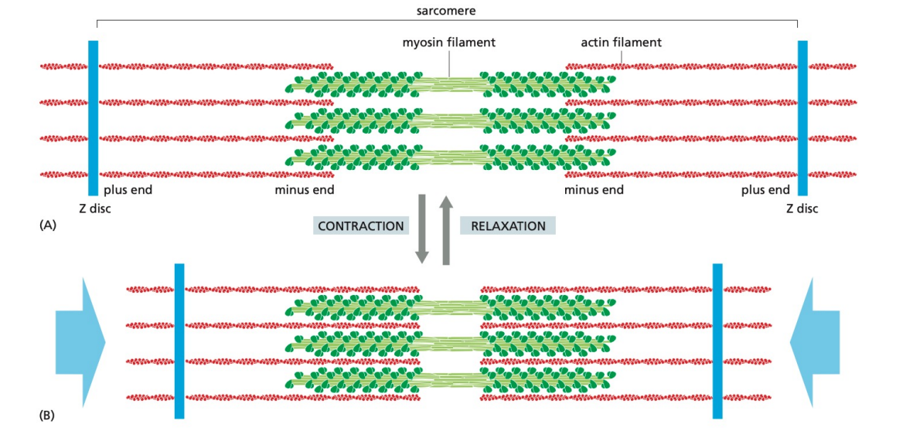

Myosin, sarcomere và vai trò của Ca²⁺
VN07 và EN05 · Vi sợi và co cơ · 3 trắc nghiệm và 1 tự luận
Bắt đầu học ↓Học trọn chương và làm bộ 80 trắc nghiệm, 15 tự luận
Sau buổi này
- Giải thích trượt sợi cơ và điều hòa vị trí gắn actin–myosin.
- Tách nguồn năng lượng ATP khỏi tín hiệu Ca²⁺.
Gợi nhớ
Khi một sarcomere ngắn lại, từng sợi actin và myosin có nhất thiết ngắn lại không?
Học kiến thức qua hình
Quan sát hình minh họa

Hai trạng thái giữ đĩa Z, sợi actin, myosin và các mũi tên co–giãn.
Quan sát · Dùng hai đĩa Z làm mốc. So chiều dài sợi dày, sợi mỏng và vùng chúng chồng lên nhau ở hai panel.
Dự đoán · Nếu sợi dày và sợi mỏng không ngắn đi, làm thế nào khoảng giữa hai đĩa Z vẫn giảm được?
Mở giải thích sau khi dự đoán
Khi actin trượt tương đối so với myosin, phần chồng lấp tăng và các đĩa Z tiến gần. Sarcomere ngắn đi dù từng sợi giữ gần như cùng chiều dài.
- Ca²⁺ tăng
Lưới cơ tương giải phóng Ca²⁺ vào bào tương.
- Troponin–tropomyosin
Trạng thái phức hợp đổi, giúp lộ vùng gắn myosin.
- Chu kỳ actin–myosin
Các đầu myosin dùng ATP để lặp chu kỳ; sợi trượt qua nhau.
Tách bước bật co khỏi phần năng lượng của motor.
Đọc hình để tự rút ra cơ chế
Quan sát · Một ảnh trước/sau ghi đĩa Z gần nhau hơn, chiều dài sợi dày giữ nguyên.
Dự đoán · Cơ chế trượt hay rút ngắn từng sợi phù hợp hơn?
Mở giải thích sau khi dự đoán
Sarcomere ngắn nhờ phần chồng lấp thay đổi, đúng với mô hình trượt.
Hai loại cơ chế trên actin
Myosin I thường nối actin với màng hoặc hàng. Myosin II có thể tạo sợi lưỡng cực, kéo hai sợi actin có hướng đối nhau; dùng trong sarcomere và vòng co.
Sarcomere
Ở cơ vân, trượt sợi mỏng và sợi dày làm hai đĩa Z tiến gần. Độ chồng lấp tăng, trong khi chiều dài bản thân sợi dày và mỏng không giảm đáng kể.
Điều hòa và năng lượng
Ca²⁺ từ lưới cơ tương gắn troponin, làm tropomyosin dịch vị trí để actin dễ gắn myosin. ATP cho phép đầu myosin tách khỏi actin và cung cấp năng lượng cho chu kỳ chuyển động.
Liên hệ thực tế
Đọc hình sarcomere theo mốc đĩa Z, vùng chồng lấp và chiều dài sợi. Ba đại lượng này kiểm tra những dự đoán khác nhau về co cơ.
Cụm bài tập
Một sarcomere chịu hai thay đổi
Ảnh đối chứng co cho đĩa Z tiến gần nhưng sợi vẫn giữ chiều dài. Ở P, lượng ATP còn đủ nhưng Ca²⁺ bào tương không tăng khi có kích thích. Ở Q, Ca²⁺ đã tăng nhưng ATP trở nên thiếu.

Đường đen giữa là sợi dày. Đường xanh là sợi mỏng. Hai ô vẽ với cùng thang ngang.
Đối chiếu bài làm
Chọn một chỗ còn phân vân. Giải thích lại bằng lời của mình rồi thử một câu cùng dạng.